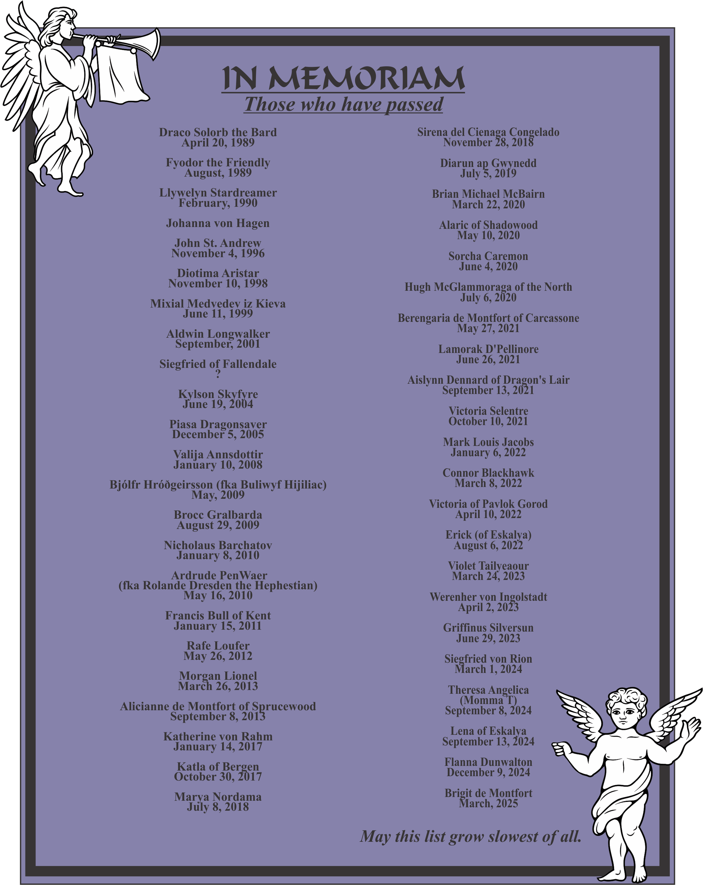

In Memoriam for the people of the Principality of Oertha
Created June 30, LV (2020)
Updated December 18, LX (2025)


The Arms of Oertha
Azure, a wolf sejant, head erect,
in chief two compass stars, and on a base Argent,
a laurel wreath Azure
To Khevron's Heraldry Pages
For links to more Heraldry information